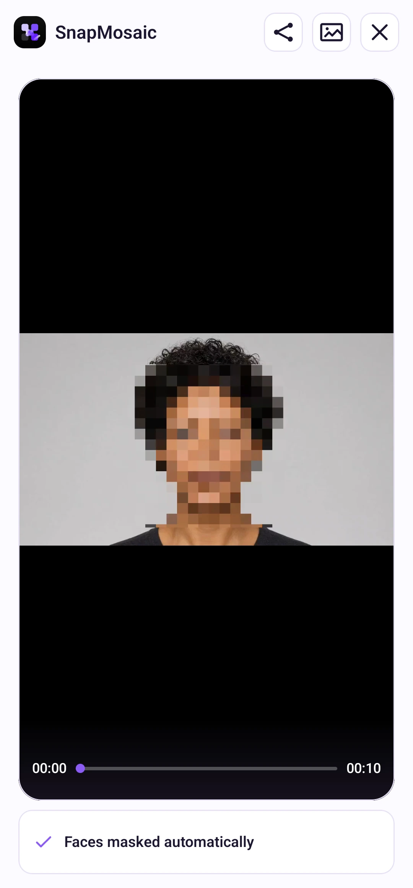

ห้องทดลองฟีเจอร์
ปิดบังวิดีโอ · ฟีเจอร์ทดลอง
ตรวจจับและปิดบังใบหน้าในวิดีโออัตโนมัติบนอุปกรณ์
ทำตามขั้นตอน
เลือกเวลาเพื่อไปยังขั้นตอนนั้น ดูแบบเต็มหน้าจอเพื่อเห็นรายละเอียดชัดขึ้น
วิธีใช้งาน
เปิดแล็บฟีเจอร์ในการตั้งค่าเพื่อใช้การปิดบังวิดีโออัตโนมัติ เลือกวิดีโอไม่เกิน 10 นาทีแล้วเริ่ม ตรวจสอบตัวอย่างและเลื่อนแถบความคืบหน้าดูแต่ละช่วงก่อนบันทึก บันทึกแล้วจึงแชร์ได้
ส่งออกเป็น MP4 โดยคงสัดส่วนและเสียง ขณะนี้มีเฉพาะปิดบังใบหน้าอัตโนมัติ ไม่มีปรับเอง อ่านข้อความ หรือตัดต่อวิดีโอ หากตกหล่นใบหน้า ให้จัดการเพิ่มเติมก่อนแชร์

